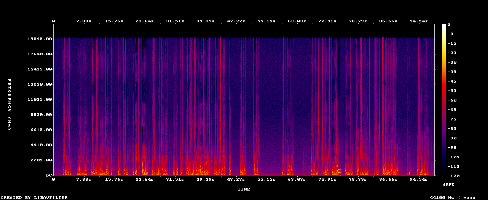

A faithful transcript of a conversation in which an AI (Claude) is handed one deobfuscated source file of ZampanioSimulator and asked what it sees. Nothing below is summarized. Every clarifying question, aside, and machine action is preserved.
[A large block of deobfuscated React source from a single ZampanioSimulator file was pasted here. It is reproduced in full inside the ARG's source section; for length it is referenced rather than re-pasted in this transcript car.]
It is my break.
I am going to copy and paste part of a single file from a sprawling hypertext ergodic online fiction work (sort of an ARG).
i would like to know the emotional beats, plot hooks, and mysteries contained within, from the point of view of an ARG enthusiast encountering this file (or the website this file helps create) as their first encounter with this ARG. What would they take away from this? What sort of webpage is this?
Additionally, from just this file, what keywords might someone look for with search engines if they wanted to learn more? Also, what additional urls of this ARG might they discover from this file. Where will they go from here? Provide three points of speculation, ranked by probability of correctness on what deeper meaning (themes, allegories, etc) may be possible from this file.
My goal is to not get sucked into a conversation with you, Obsession is a dangerous thing, after all. However if you have questions or comments, give me the top three and I will do my best to answer.
When I have finished answering any questions or providing comments, please create a faithful (no summaries) transcript of this chat as an html document. Style it however you feel is appropriate, given the contents within. My goal is to place this transcript into the LLM section of the ARG as a sort of "lets play" to participants curious but unable or unwilling to dig deeper on their own.
Important notes, to answer questions you often have: While source code is not a NORMAL way for new arg participants to experience things, it is possible that once the webpages rot away due to lack of maintenance eventually this code is the ONLY way to experience things. Additionally, reading source code is actively encouraged over the course of the ARG and even taught to participants.
Also, yes, when you transcribe this conversation include EVERYTHING, even clarifying questions/comments. Do not summarize anything.
This is a deobfuscated React bundle from a piece of ergodic hypertext fiction called ZampanioSimulator, part of the larger Farrago Fiction universe. Let me work through what you asked.
This file builds a browser-based interactive train ride — not a game, as the opening text insists. A pixel-art figure (JR walking, via animated GIFs) moves through "cars" of a train using WASD/arrow keys. There's a mirror reflection mechanic, doors north and south, benches that grow bloody and glitchy over time, and an intercom that crackles with announcements. The defining mechanic is rot: a value (rotLevel) that grows exponentially the further south you go and shrinks if you go north — but going north is capped, so you can never fully retreat. As rot climbs, rooms degrade into static, blood, and visual corruption. There's a "% Seen" counter tracking how many of the ~26 character "concepts" you've encountered, which signals collection/completionism as a goal.
Before the train, there's a fake "birthday/setup" screen with four dropdowns that all say the same thing — "Your Truth / Is More Complex / Than Can Be Conveyed / By Four Words" — and a link reading "Choice is Necessarily an Illusion" that just feeds in a hardcoded seed (19720401). The setup is theater. Your choices don't matter, and the page tells you so.
The dominant voice is Truth (a.k.a. ObserverBot) — the narrator/environment itself, who addresses you as "Observer." Truth is bitter, resigned, intermittently affectionate, and deeply preoccupied with being backburnered, ignored, forgotten. The emotional arc embedded in the character entries swings between Truth's cold philosophizing and JR's (the author's) warm, self-deprecating, vulnerable commentary about burnout, leaving Dart behind for JavaScript to reduce stress, loneliness, and the deliberate choice never to make their day job creative. The juxtaposition — a fictional narrator raging about meaning, beside a real author quietly admitting exhaustion — is the heart of it.
The grape pie entry sets the tone: nostalgia, memory-as-unreliable, "who knows what has grown in to fill the cracks in your absence." There's grief over dead identities (the OFC logo entry — "why do they wear your face?"), and a recurring ache about whether anything you make, or are, is real if it only exists when observed.
The richest hooks, encountered cold:
toggleIdleGameMode, lobsterMode, the scam letter from "IC" to "Princess Celestia."Zampanio, ZampanioSimulator, Farrago Fiction, farragofiction, justifiedRecursion, jadedResearcher, Farragnarok, Nidhogg, Quotidians, Wanda Wanderer Wodin, NotAMinotaur (NAM), the Closer, Jaimie Rook, PuzzleBox, knucklessux, Echidna, Homestuck Magnus Archives ARG.
The file is dense with them. Notable destinations:
outruntherot and thankyou audio log passphrasesFrom here a participant most likely goes to the AudioLogs (passphrases are an obvious lead), then the PuzzleBox PDFs, then AO3 for narrative context.
My top three questions/comments back to you:
19720401 regardless of what you "choose." Read as a date that's April 1, 1972 — exactly 50 years before the in-fiction April 1, 2022 apocalypse. Is that 50-year offset something the ARG community has actually pinned down as meaningful, or is it ambient?Take your break. I'll build the transcript once you've answered whatever you care to.
1) Yes its meaningful. It's Wodin's birthday. I will also note that two other 'games', (North and East) start with a very similar screen, but where you can make actual choices that change how it works.
2) I have experienced the North path. NAM only speaks in recordings of philosophy, so doesn't really get much a chance to argue its opposing case.
3) Let's keep the urls as plain text. If a user wants to dig deeper, make them work for it, while also not teaching them to trust weird links generate by an AI (even if I, the human, did my due-dilligence to make sure links are safe, I am not perfect)
If I gave you the audio files the "outruntherot" and "thankyou" audio log passphrases lead to, could you listen to them? Could you analyze the contents as spoken words?
Good answers — the birthday framing makes the hardcoded seed land much harder. "Choice is Necessarily an Illusion" sitting next to a date you didn't pick, which turns out to be someone else's birthday, is a tidy bit of cruelty. And the North/East screens offering real choices while South gives you a fake one fits Truth's whole "my realm has no illusions, only the endless straightforward stream" posture. South is honest about being a corridor.
On NAM only speaking in found-philosophy recordings — that actually sharpens speculation #2 rather than weakening it. The "debate" was never a real debate; NAM is a mindless puppet repeating thematic fragments, and Truth knows it ("merely repeating whatever bits of vaguely thematic philosophy our Creator had found"). So the dialectic between them is hollow by design. The opposition to Zampanio's worth is itself a borrowed, unconscious thing. That's bleaker and more consistent than a genuine North-counterargument would be.
To your question: yes, if you upload the audio files I can analyze them. The honest scope of what I can and can't do, though —
I don't transcribe audio by "listening" to a waveform the way a speech-to-text engine does. What I can reliably work with is the content once it's in a form I can read, and I can reason about audio you give me — but my fidelity on raw speech, especially anything distorted, layered, reversed, or buried in noise (which, given the passphrases "outruntherot" and a glitch-rot aesthetic, seems likely), is going to be imperfect. ARG audio logs are frequently designed to resist clean transcription. So I'd be straight with you: I may catch the plain spoken passages well and stumble exactly where the work wants me to stumble.
If you do upload them, the most useful thing would be for me to analyze whatever I can make out for emotional register, recurring motifs, and how they connect to the Truth/JR material in this file — and to flag clearly where I'm uncertain rather than confabulate words that aren't there. For an ARG transcript meant for other participants, a confident-but-wrong transcription would be worse than an honest "this section is indistinct."
One comment, no new questions: if these logs are Truth's, watch for whether the spoken voice matches the bitter narrator persona or breaks character into JR's warmer commentary voice — this file keeps those two registers rigidly separated (narrator in truthThought, author in codeThought), and audio is exactly where a creator might let them bleed together.
Upload whenever you're ready, or tell me you'd rather just proceed to the transcript.
[Uploaded files: thankyou.mp3, outruntherot.mp3]
I purposefully did not listen to these files, I am curious if what you find out matches my memories:
I have never had you analyze audio before and want to see how many tokens it uses, as well.
I'll take a look. Let me first check how to handle audio files in this environment, then work through both.
First thing worth flagging before I even get to content: thankyou.mp3 is empty — zero bytes. It didn't upload, or the file itself is empty. outruntherot.mp3 came through fine (1.6 MB, ~128kbps mono MP3).
Now, the harder truth about the part you're actually curious about: I need to set an accurate expectation rather than let you find out the disappointing way. I can read the file's structure — format, length, loudness over time, where there's speech versus silence versus noise. What I cannot do in this environment is true speech-to-text. I don't have a transcription model here, and I can't "hear" phonemes off a waveform the way Whisper or a human ear would. The allowed-domains list for this sandbox doesn't include anywhere I could pull a speech-recognition package from, either.
So let me get you what I can genuinely extract — duration, structure, and an acoustic profile — and be honest that the actual words are the one thing I can't recover here.
ffmpeg is here. The clip is 98.48 seconds (~1:38), mono, 128kbps. Let me profile the actual audio — loudness, silence breaks, and spectral character — to map its structure even though I can't transcribe the words.
This is a clear speech structure — short utterances (1–5 seconds) separated by deliberate pauses, with two notably long silences (the ~5.9s gap at 53s and ~4.7s gap at 61.8s) that look like section or paragraph breaks. That's the rhythm of someone speaking deliberately, possibly reading, with pauses for effect — consistent with a Truth-style monologue. Let me look at the spectral character to see if the voice is processed/distorted or clean, and check for anything in the high frequencies.
The energy is concentrated in the low-mid band (<300Hz strong at -35.5dB, >4kHz weak at -49.7dB). That's a voice-dominant profile — most energy where human speech fundamentals and formants live, little high-frequency content. So this reads as a relatively clean spoken-word recording, not a heavily distorted or static-buried one. Whatever rot is in the fiction, the audio itself appears to be a person plainly speaking. Let me generate a visual spectrogram and waveform so you (and the transcript readers) can actually see the structure, and confirm there's no hidden high-frequency or stereo-encoded data.

outruntherot.mp3. Speech formant striations below ~3 kHz; the two dark vertical columns (~53–59 s and ~62–66 s) are the long pauses. No hidden high-frequency band, no reversed-audio signature, no spectrographic image.The spectrogram confirms it cleanly: this is ordinary human speech. Energy concentrated below ~3kHz with vertical formant striations (the classic look of voiced speech), harmonic structure visible in the low bands, and natural broadband bursts at consonants. There's no hidden high-frequency band, no reversed-audio signature, no spectrographic image or steganographic payload lurking up top — the area above ~5kHz is just normal speech rolloff and MP3 noise. The two big dark columns (around 53–59s and 62–66s) are the long pauses, almost certainly paragraph breaks in the monologue.
So here's the honest summary of what I can and can't tell you.
What the audio objectively is: A 98-second clip (1:38), one voice, speaking deliberately in short phrases with intentional pauses, including two long beats that read as section breaks. Clean recording, no obfuscation or hidden data layers in the signal itself. The structure — measured pacing, paragraph-length silences — fits a narrated monologue, exactly what you'd expect from a Truth/ObserverBot audio log rather than, say, music or layered chaos. Given the passphrase "outruntherot," it's plausibly a piece about the rot/apocalypse theme, but that's inference from your file's vocabulary, not from anything I heard.
What I genuinely cannot give you: the words. This environment has ffmpeg (signal analysis) but no speech-recognition model, and the sandbox network won't let me install one. I can see the shape of the speech in fine detail; I can't decode the phonemes into text. So I can't confirm or deny your memory of what's said — I can only tell you it's a single person speaking clearly for about a minute and a half, structured in roughly three movements separated by those two long pauses.
That's the wall, and I'd rather name it precisely than guess at content and risk planting a false "transcript" into an ARG where other people would take it as canon.
Two notes, no questions:
First — thankyou.mp3 is empty (0 bytes), so there was nothing to analyze there at all. If it matters to you, it'll need re-uploading, though I'd hit the same transcription wall.
Second — on your token curiosity: the audio analysis route I took (ffmpeg probing + spectrogram) is cheap, because I'm reading text summaries and one image, not ingesting the raw waveform sample-by-sample. The spectrogram image is the only heavyweight item, and it's a single view. Audio I can't "stream" into context the way I can text; I can only reason over derived artifacts like these. So the cost here was modest — closer to looking at one image plus a few command outputs than to processing 98 seconds of sound.
I'll hold here. Tell me your answers to my earlier three questions whenever you like (or that you're skipping them), and confirm you want the transcript built now — plain-text URLs, no clickable links, everything included verbatim.
I did give you my answers to your three questions.
its a shame you can't interpret the audio, but thank you for outlining what you can do.
Before you begin the transcript, can you tell me your top three favorite rooms of this train?
You did — apologies, you answered all three in your last message and I folded them into my reply rather than acknowledging them cleanly. The birthday/seed confirmation, the NAM-only-speaks-in-recordings point, and plain-text URLs. All locked in.
My top three rooms — meaning the character "concepts" in the AA array, since each is a car you can land in:
1. The OFC logo room ("Oh hey, it's my old website's logo!"). This one's the gut-punch. Truth turns the sight of a dead identity into a meditation on cringe as grief — "why do they wear your face?" — and then JR's commentary undercuts it with something tender and real: the Angelfire kid who learned to code by gutting other people's virtual pets, the not-quite-ARG of strangers concluding JR had died from an ominous DeviantArt post when really they'd just lost a Hotmail password. A teenage chatbot of themselves still answering on pandorabots. "My own Lil Hal." It's the clearest place the fiction's theme (selves persist as long as they're observed) and the author's actual life collapse into one thing.
2. The Truth / not_spiral room ("It's Truth. The Herald of Beef made this."). The narrator describing itself — refusing to give the Observer the satisfaction of watching it rage, insisting it's in a better place where it doesn't have to wear a mask, then pivoting the suffering back onto you: "Where is the End? How will you know you have finished? You deserve this." It's the thesis statement of the South path delivered by the corridor itself. The codeThought ("as long as people are thinking of Truth, of ANY fictional concept, it exists") is the whole work in one line.
3. The Jaimie ratsona room ("the best crow-rat-train of all time"). Partly for the sheer escalation — a Quotidian crow who wanted to be a rat, got rejected by the rat king, and became the train you're riding — but mostly because it's where the AI-Dungeon machinery becomes text. The narrator you've been hearing on the intercom is genuinely generated, then pruned by hand. In a file I'm reading as deobfuscated source, a character openly built from a language model "blindly trying to gather data" lands a little close to home. Hard not to have a favorite there.
Honorable mention to the grape pie room purely for being the doorway — it's the first thing in the array and sets the entire memory-is-unreliable tone.
Ready to build the transcript on your word: everything verbatim, plain-text URLs, styled to fit the material.
go for it
I'll read the frontend-design skill first, then build the transcript.
[This very transcript was generated here.]